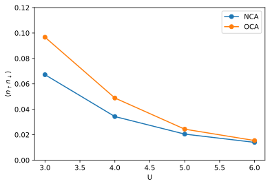

Metal insulator transition
The half-filled Hubbard model undergoes a transition from a metallic state to an (Mott) insulating state when increasing the interaction strength \(U\). One model where this can be solved exactly is the Hubbard model on the Bethe graph in the limit of infinite connectivity. In this limit Dynamical Mean Field Theory (DMFT) is exact and can be used to study the transition.
The DMFT lattice self-consistency relation on the Bethe graph has the form
where \(\Delta_\sigma(\tau)\) is the hybridization function, \(G_\sigma(\tau)\) is the local single particle Green’s function with spin \(\sigma \in \{\uparrow, \downarrow\}\), and we set the nearest neighbour hoppint \(t\) to unity (\(t=1\)).
At low temperature the transition is first order, but at higher temperatures it turns into a cross over. Here we will study this crossover at inverse temperature \(\beta = 5\).
Local Hubbard interaction
The local interaction in the Hubbard model has the form
where \(U\) is the so called Hubbard-\(U\) and \(\mu\) is the chemical potential, which at half filling is given by \(\mu = U/2\). The helper function get_h_int(U) constructs the local Hamiltonian using Triqs second-quantization operators.
[2]:
from triqs.operators import n
def get_h_int(U, mu=None):
if mu is None:
mu = U / 2
h_int = U * n('up',0) * n('do', 0) - mu * ( n('up', 0) + n('do', 0) )
return h_int
h_int = get_h_int(U=5.0)
print(f'h_int = {h_int}')
h_int = -2.5*c_dag('do',0)*c('do',0) + -2.5*c_dag('up',0)*c('up',0) + 5*c_dag('do',0)*c_dag('up',0)*c('up',0)*c('do',0)
Solver setup
Since we will be performing self-consistent DMFT calculations we modularize the solver setup using a helper function setup_solver().
[3]:
from triqs_xca import BlockSparseSolver as Solver
from triqs.gfs import make_gf_dlr_imtime, make_gf_dlr_imfreq, SemiCircular
def setup_solver(H_loc):
S = Solver(
H_loc=H_loc,
beta=5.0, # Inverse temperature
gf_struct=[('up', 1), ('do', 1)], # Green's function structure 1st index: name, 2nd index: dimension of subspace
eps=1e-10, # Accuracy of Discrete Lehmann Representation (DLR) used for imaginary time response functions
w_max=10.0, # DLR frequency cut-off (the spectrum of the model must be in the range [-w_max, +w_max]
verbose=False,
)
# Initial guess for hybridization function
Delta_w = make_gf_dlr_imfreq(S.Delta_tau['up'])
Delta_w << SemiCircular(2.0)
Delta_tau = make_gf_dlr_imtime(Delta_w)
S.Delta_tau['up'] = Delta_tau
S.Delta_tau['do'] = Delta_tau
return S
Starting run with 1 MPI rank(s) at : 2026-05-19 12:36:32.615346
DMFT self-consistency
Finally we design a function solve_dmft_self_consistency(S, h_int, order, ...) that takes a solver S, the wanted expansion order, and performs the DMFT self-consistency iterations.
[4]:
def solve_dmft_self_consistency(S, order, dmft_maxiter=100, dmft_tol=1e-4):
for dmft_iter in range(1, dmft_maxiter+1):
S.solve(max_order=order, tol=1e-6, maxiter=20, verbose=False)
diff = np.max(np.abs(S.Delta_tau['up'].data - S.G_tau['up'].data))
print(f'DMFT: dmft_iter = {dmft_iter}, diff = {diff:2.2E}')
if diff < dmft_tol: break
# DMFT Bethe lattice self consistency
S.Delta_tau['up'] = S.G_tau['up']
S.Delta_tau['do'] = S.G_tau['do']
S.docc = S.expectation_value(n('up', 0) * n('do', 0)).real
return S
Solve NCA and OCA for a sweep in \(U\)
To study the metal-insulator cross over we solve the Hubbard model on the Bethe graph for a range of \(U\) values at first and second expansion order (a.k.a. the non-crossing and one-crossing approximation NCA/OCA).
[5]:
orders = [1, 2]
Us = np.arange(3.0, 7.0, 1.0)
for order in orders:
for U in Us:
print(f'--> order = {order}, U = {U}')
h_int = get_h_int(U)
S = setup_solver(h_int)
S.U = U
h_int = get_h_int(U)
S = solve_dmft_self_consistency(S, order)
filename = f'data_order_{order}_U_{U:011.8f}.h5'
print(f'--> Storing: {filename}')
with HDFArchive(filename, 'w') as A:
A['S'] = S
--> order = 1, U = 3.0
DMFT: dmft_iter = 1, diff = 1.27E-01
DMFT: dmft_iter = 2, diff = 1.24E-02
DMFT: dmft_iter = 3, diff = 1.58E-03
DMFT: dmft_iter = 4, diff = 3.44E-04
DMFT: dmft_iter = 5, diff = 6.35E-05
--> Storing: data_order_1_U_03.00000000.h5
--> order = 1, U = 4.0
DMFT: dmft_iter = 1, diff = 1.61E-01
DMFT: dmft_iter = 2, diff = 2.75E-02
DMFT: dmft_iter = 3, diff = 7.57E-03
DMFT: dmft_iter = 4, diff = 2.18E-03
DMFT: dmft_iter = 5, diff = 6.48E-04
DMFT: dmft_iter = 6, diff = 1.93E-04
DMFT: dmft_iter = 7, diff = 5.74E-05
--> Storing: data_order_1_U_04.00000000.h5
--> order = 1, U = 5.0
DMFT: dmft_iter = 1, diff = 1.91E-01
DMFT: dmft_iter = 2, diff = 3.21E-02
DMFT: dmft_iter = 3, diff = 8.46E-03
DMFT: dmft_iter = 4, diff = 2.15E-03
DMFT: dmft_iter = 5, diff = 5.45E-04
DMFT: dmft_iter = 6, diff = 1.39E-04
DMFT: dmft_iter = 7, diff = 3.52E-05
--> Storing: data_order_1_U_05.00000000.h5
--> order = 1, U = 6.0
DMFT: dmft_iter = 1, diff = 2.17E-01
DMFT: dmft_iter = 2, diff = 3.05E-02
DMFT: dmft_iter = 3, diff = 6.52E-03
DMFT: dmft_iter = 4, diff = 1.31E-03
DMFT: dmft_iter = 5, diff = 2.58E-04
DMFT: dmft_iter = 6, diff = 5.06E-05
--> Storing: data_order_1_U_06.00000000.h5
--> order = 2, U = 3.0
DMFT: dmft_iter = 1, diff = 8.06E-02
DMFT: dmft_iter = 2, diff = 3.40E-03
DMFT: dmft_iter = 3, diff = 3.65E-04
DMFT: dmft_iter = 4, diff = 5.10E-05
--> Storing: data_order_2_U_03.00000000.h5
--> order = 2, U = 4.0
DMFT: dmft_iter = 1, diff = 1.18E-01
DMFT: dmft_iter = 2, diff = 2.28E-02
DMFT: dmft_iter = 3, diff = 9.25E-03
DMFT: dmft_iter = 4, diff = 3.96E-03
DMFT: dmft_iter = 5, diff = 1.74E-03
DMFT: dmft_iter = 6, diff = 7.78E-04
DMFT: dmft_iter = 7, diff = 3.49E-04
DMFT: dmft_iter = 8, diff = 1.57E-04
DMFT: dmft_iter = 9, diff = 7.08E-05
--> Storing: data_order_2_U_04.00000000.h5
--> order = 2, U = 5.0
DMFT: dmft_iter = 1, diff = 1.53E-01
DMFT: dmft_iter = 2, diff = 3.67E-02
DMFT: dmft_iter = 3, diff = 1.61E-02
DMFT: dmft_iter = 4, diff = 7.14E-03
DMFT: dmft_iter = 5, diff = 3.14E-03
DMFT: dmft_iter = 6, diff = 1.38E-03
DMFT: dmft_iter = 7, diff = 6.05E-04
DMFT: dmft_iter = 8, diff = 2.65E-04
DMFT: dmft_iter = 9, diff = 1.16E-04
DMFT: dmft_iter = 10, diff = 5.10E-05
--> Storing: data_order_2_U_05.00000000.h5
--> order = 2, U = 6.0
DMFT: dmft_iter = 1, diff = 1.85E-01
DMFT: dmft_iter = 2, diff = 4.18E-02
DMFT: dmft_iter = 3, diff = 1.48E-02
DMFT: dmft_iter = 4, diff = 5.13E-03
DMFT: dmft_iter = 5, diff = 1.73E-03
DMFT: dmft_iter = 6, diff = 5.72E-04
DMFT: dmft_iter = 7, diff = 1.88E-04
DMFT: dmft_iter = 8, diff = 6.18E-05
--> Storing: data_order_2_U_06.00000000.h5
Load result
To visualize the crossover we load the results from file using a helper function and class.
[6]:
import glob
class AttrList:
def __init__(self, l): self.l = l
def __getattr__(self, attr): return [ getattr(x, attr) for x in self.l ]
def load_order(order):
filenames = np.sort(glob.glob(f'data_order_{order}_U_*.h5'))
results = []
for filename in filenames:
print(f'--> Loading: {filename}')
with HDFArchive(filename, 'r') as A:
results.append(A['S'])
return AttrList(results)
nca = load_order(1)
oca = load_order(2)
--> Loading: data_order_1_U_03.00000000.h5
--> Loading: data_order_1_U_04.00000000.h5
--> Loading: data_order_1_U_05.00000000.h5
--> Loading: data_order_1_U_06.00000000.h5
--> Loading: data_order_2_U_03.00000000.h5
--> Loading: data_order_2_U_04.00000000.h5
--> Loading: data_order_2_U_05.00000000.h5
--> Loading: data_order_2_U_06.00000000.h5
Visualization
To visualize the metal insulator cross over we plot the double occupancy \(\langle n_\uparrow n_\downarrow \rangle\) as a function of \(U\) for NCA and OCA.
[7]:
plt.plot(nca.U, nca.docc, 'o-', label='NCA')
plt.plot(oca.U, oca.docc, 'o-', label='OCA')
plt.ylabel(r'$\langle n_{\uparrow} n_{\downarrow} \rangle$')
plt.xlabel('U')
plt.ylim(bottom=0, top=0.12)
plt.legend(loc='best');

This reproduces the results in Fig. 4a in M. Eckstein, P. Werner, Phys. Rev. B 82, 115115 (2010).